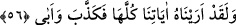

Çünkü cesed topraktandır. Bu sebeple Peygamber Efendimiz (a.s.): “Sizin dünyanızdan
bana üç şey sevdirildi: Güzel koku, kadınlar ve gözümün nuru namaz.”[84] hadîsinde
namazı dünyadan saymıştır. Bunun sebebi şudur: Namazın sûreti olan fiiller ve zikirler
uzuvlarla yapılır ki onlar dünyadan ve mülk âlemindendir, her ne kadar kalb ve
teveccüh melekût âleminden olsa da. Allah Teâlâ’dan bizi yeryüzünün hakîkatlerini
anlayanlardan ve dünyanın her çeşit câzibesinden yüz çevirenlerden eylemesini niyaz
ederiz.
56. Andolsun biz ona (Fir’avn’a) bütün (bu) delillerimizi gösterdik; yine de
yalanladı ve diretti.
“Andolsun biz ona (Fir’avn’a) bütün (bu) delillerimizi gösterdik;” Yani Allâh’a
yemin olsun ki Fir’avn’a Mûsâ’nın ellerinde asâ, el ve diğer bütün
âyetlerimizi/mûcizelerimizi mühlet vererek gösterdik. Ya da onların doğru olduğunu ona
tanıttık ve onların neye delâlet ettiğini açıkladık.
“Yine de yalanladı” o hiç düşünmeden aşırı inatçılığı sebebi ile bütün bu mûcizeleri
yalanladı, onların sihir olduğunu iddiâ etti “ve diretti.” Küstahlığından onları kabûl
etmekten şiddetle kaçındı.
[81]. Buhârî, Kader, 4; Tevhid, 54; Müslim, Kader, 6-8; Tirmizî, Kader, 3; Müsned,
IV, 67
[82]. Mâlik Kur’an’a göre cehennem bekçisinin adıdır. bk. ez-Zuhruf, 43/77
[83]. Bk. Müslim, Cennet, 83
[84]. Nesâî, İşretü’n-nisâ, 1; Müsned, III, 128, 199, 285